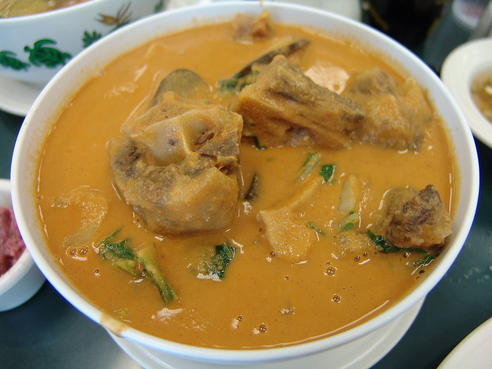

Kare-Kare

Description
Palayok or clay pot is used to cook this dish. It also functions as the serving bowl at the same time.The best way to eat kare-kare is to pair it with plain white rice. Bagoong alamang or fermented shrimp paste completes the dish by providing flavor. Simply combine a spoonful of rice and kare-kare with a small portion of bagoong and enjoy!
Ingredients
- 4½ pounds beef oxtails
- 3 cups water
- 2 beef bouillon cubes
- ½ pound bok choy, chopped
- ½ pound long beans, cut into bite-sized pieces
- ½ pound eggplant, cubed
- 2 tablespoons olive oil
- 1 onion, chopped
- 2 cloves garlic, minced
- 1 teaspoon achiote powder
- 3 tablespoons smooth peanut butter
Instructions
- Combine the oxtails and water in a large pot; bring to a boil, reduce heat to medium-low, and simmer at least 2 hours.
- Skim as much fat from the top of the liquid as possible. Crumble the beef bouillon cubes into the liquid and allow to dissolve. Remove the meat from the broth and set aside. Add the bok choy, long beans, and eggplant to the broth and simmer until tender.
- While the vegetables simmer in the broth, heat the olive oil in a large pot over medium heat. Cook and stir the onion and garlic in the hot oil until tender. Stir the achiote powder into the mixture to add a little color. Add the peanut butter and stir until it's melted into the mixture. Add about half the broth to the pot; bring to a simmer for 5 minutes. Add the oxtails and cook another 5 minutes before adding the remaining broth with the vegetables. Serve hot.